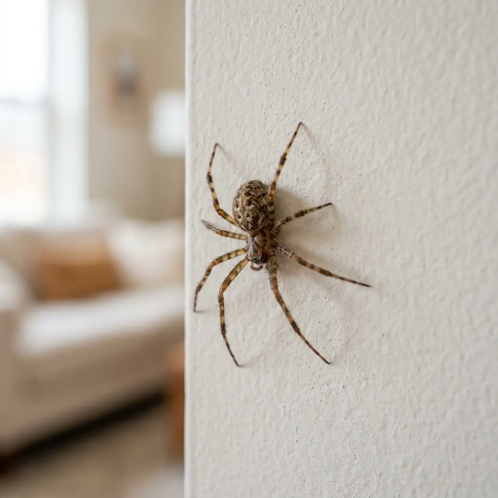
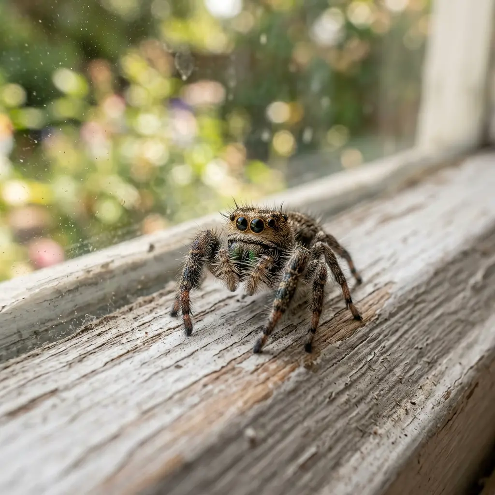
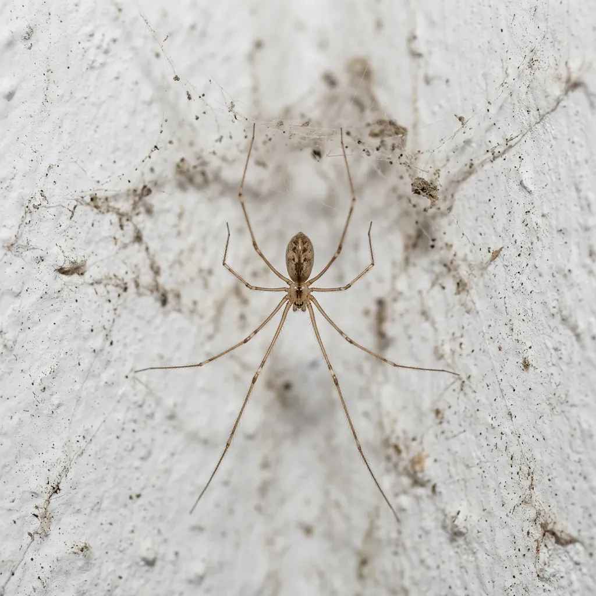

Spiders are a common concern for property owners throughout Huntington Park. While many species are harmless, recurring spider activity can be a sign of larger pest issues around a home or commercial property. Professional spider control focuses on identifying where spiders are hiding, removing active populations, and reducing the conditions that attract them. Whether you are seeing webs around windows, spiders in the garage, or repeated activity near outdoor lighting, a targeted treatment plan can help restore comfort and reduce future problems. Our team provides professional spider control in Huntington Park for residential and commercial properties throughout the 90255 area.
The warm Southern California climate allows many insects and spiders to remain active throughout much of the year. As insects gather around homes, businesses, landscaping, and exterior lighting, spiders often follow in search of food.
Properties throughout Huntington Park, including neighborhoods near Pacific Boulevard, Salt Lake Park, and surrounding residential areas, can experience spider activity in garages, storage spaces, attics, outdoor structures, and landscaped areas.
Spider populations often increase when there is easy access to shelter, moisture, and insect activity.
At Huntington Park Spider Control, we provide specialized pest management solutions to keep your home safe and comfortable. Our team of local specialists is dedicated to delivering top-tier spider control services to homeowners throughout the Huntington Park area. Learn more about our team and our commitment to safety near landmarks like Huntington Park High School. We combine years of local experience with eco-conscious defenses that keep arachnids out for good.
Many property owners do not notice a spider problem until activity becomes more visible. Common signs include frequent sightings indoors, repeated webs, egg sacs, and increased activity near lights. When these signs continue over time, a professional inspection can help determine the source of the issue.
Frequent spider sightings indoors, indicating active pathways.
Spider webs appearing repeatedly in windows, corners, or eaves.
Egg sacs appearing around garages, attics, or storage areas.
Increased spider activity near exterior lighting and entry points.
Spiders appearing in multiple rooms, suggesting breeding nests.
Recurring problems despite regular cleaning or store-bought traps.
Property owners often prefer professional services because they provide a more complete approach than temporary DIY solutions.
We conduct detailed inspections of your property to locate active populations, identifying hiding areas and primary entry routes.
Accurately identifying the species helps us implement targeted treatments specific to their behavior and nesting habits.
Treatments are carefully applied directly to nesting sites and common harborages, minimizing risk while maximizing eradication.
We physically clear all active webs and egg sacs to immediately curb the population and clean up the property’s appearance.
We provide custom recommendations to help seal exterior entry paths, control moisture, and make your environment less attractive to spiders.
Regular follow-ups and barrier monitoring ensure your property remains protected against spider populations year-round.
Every property presents different challenges. Effective spider management begins with understanding where spiders are active and what is attracting them.
Residential treatments focus on common hiding areas, entry points, web removal, and long term prevention.
Businesses often require spider management around entrances, storage areas, loading zones, outdoor seating areas, and employee spaces.
Targeted treatments help reduce active spider populations while addressing conditions that support future activity.
Removing webs helps improve appearance and reduces locations where spiders remain active.
Spider egg sacs can contain large numbers of developing spiders. Removing them is an important part of long term control.
Indoor treatments focus on living spaces, storage rooms, garages, attics, and other areas where spiders commonly hide.
Outdoor treatments help reduce spider activity around foundations, landscaping, fences, patios, and exterior walls.
Some situations require immediate attention. When venomous species or sudden infestations occur, prompt action is essential to ensure comfort and safety. Same day spider control in Huntington Park can help address urgent situations quickly and efficiently.
Every property receives recommendations based on its layout, activity level, and risk factors.
The process begins with a detailed inspection of the property to identify spider activity, hiding areas, and contributing factors.
Identifying the species helps determine the most effective treatment strategy.
Every property receives recommendations based on its layout, activity level, and risk factors.
Treatments are applied to active areas and locations where spiders commonly travel or hide.
Existing webs and egg sacs are removed whenever possible.
Property owners receive practical guidance to reduce future spider activity.
Spiders prefer quiet areas that provide shelter and access to food. Regular inspections of these areas can help identify activity before populations grow.
Several spider species are commonly encountered around homes and businesses in the area.

House spiders are frequently found indoors around corners, ceilings, garages, and storage areas. While generally harmless, their webs can become a nuisance when populations increase.

Jumping spiders are known for their quick movement and excellent vision. They are often found around windows, doors, and exterior walls.
Orb weavers create large circular webs in gardens, landscaping, fences, and outdoor structures.

Cellar spiders are commonly found in basements, garages, crawl spaces, and other quiet areas with limited disturbance.
Black widow spiders are among the most concerning species found in Southern California. They prefer dark, sheltered locations such as wood piles, utility boxes, sheds, and storage areas.
Get professional insights on how to handle, prevent, and control spider activity around your 90255 area home or business.
The most effective approach combines exclusion, sanitation, and pest management. Sealing cracks around doors, windows, utility penetrations, and foundation gaps can help reduce entry opportunities. Reducing clutter and controlling insects around the property can also make the environment less attractive to spiders.
Spiders are attracted to locations that provide food, shelter, and protection. Common attractants include insect activity, outdoor lighting, dense vegetation, moisture issues, cluttered storage areas, and untreated entry points. Addressing these conditions can significantly reduce spider activity.
Spider traps can help monitor activity and capture individual spiders. However, traps alone rarely address the underlying cause of an infestation. Properties with ongoing spider activity often benefit from a more complete treatment strategy.
If spiders continue appearing after cleaning, web removal, or store bought treatments, professional service may be necessary. Frequent sightings, egg sacs, and recurring activity are common indicators that the problem extends beyond what DIY methods can resolve.
The cost of spider control depends on several factors. These may include property size, severity of activity, treatment areas, type of spider involved, number of visits required, and prevention services selected. An inspection provides the most accurate assessment of treatment needs and expected costs.
Many treatment approaches can be adapted for households with children and pets. A professional inspection helps determine the most appropriate strategy for the property while considering safety and effectiveness.
Recurring spider activity is often linked to conditions that remain unchanged. Common causes include untreated egg sacs, ongoing insect activity, structural gaps, landscaping conditions, outdoor harborage areas, and moisture concerns. Long term results depend on addressing both spiders and the conditions that support them.
Got questions about our methods or packages? Find answers to commonly asked questions below.
If spiders are becoming a recurring concern around your home or business, professional spider control can help identify the cause, reduce active populations, and create a plan for long term prevention. Serving Huntington Park and the surrounding 90255 area, our team is ready to help restore comfort and peace of mind.